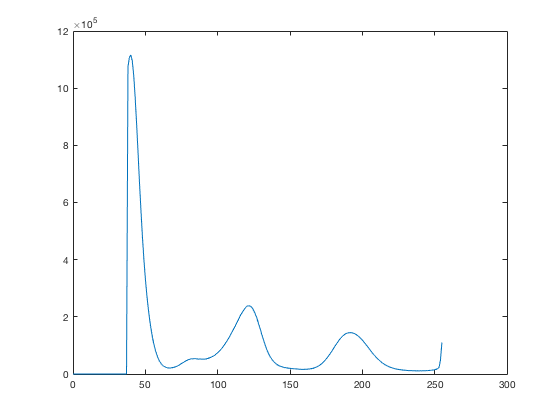
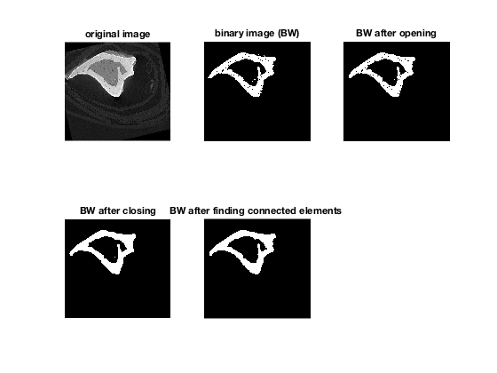
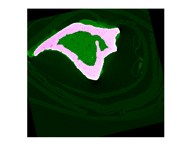
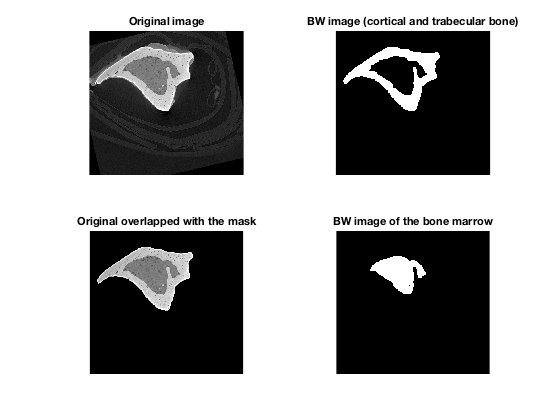
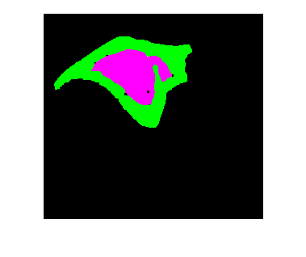
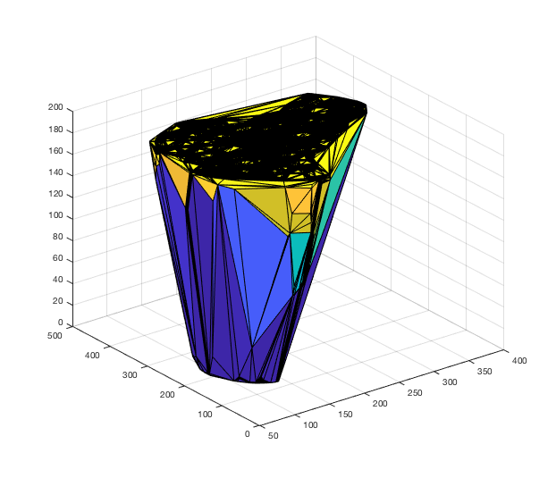
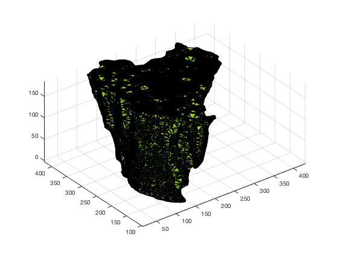
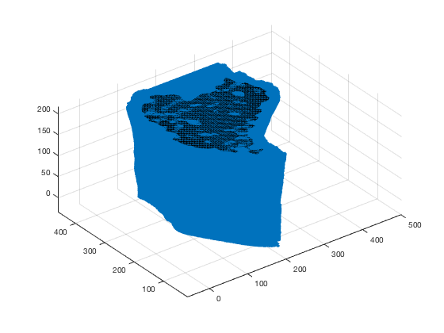

Contents
- Import 3D image from the file with resized images
- Image processing
- BINARIZATION OF THE IMAGE
- CLOSING and OPENING techniques
- FINDING CONNECTED ELEMENTS
- MORPHOLOGICAL OPERATIONS ON THE BACKGROUND
- THRESHOLDING TECHIQUE TO SEPARATE BONE MARROW FROM CORTICAL AND TRABECULAR BONE.
- IMAGE PROCESSING ON THE BONE MARROW IMAGE
- TECHNIQUES TO ELIMINARE TRABECULAR BONE FROM THE CORTICAL BONE
Import 3D image from the file with resized images
% IMPORTFILE('SampleXX_resized03') % Imports data from the specified file % SampleXX_resized03: is the file to read % Import the file newData1 = load('-mat','Sample37_resized03'); % Create new variables in the base workspace from those fields. vars = fieldnames(newData1); for i = 1:length(vars) assignin('base', vars{i}, newData1.(vars{i})); end array3d = Ires; clearvars -except array3d;
Image processing
%FINDING AUTOMATICALLY THE NUMBER OF PEEKS ON THE HISTOGRAM array3d = uint8(array3d); [val,pos] = imhist(array3d); for i = 1:5 %exclude the outliers in before 5 val(i) = 0; end [~,id] = max(val); for i = 1:(id+10) %exclude the big peek before idx+50 val(i) = 0; end [valMax,posMax] = findpeaks(val,'MinPeakDist',10,'MinPeakWidth',5); numThresh = numel(posMax)-1; % if this automatic step is not working (for example with images where % cortical bone and bone marrow have very similar contrast) the operator % will be able to decide manually the number of threshold he desire. figure(1); plot(pos,val);
BINARIZATION OF THE IMAGE
Image processing to obtain a binarized image
var = 'N'; while (var == 'N') % THRESHOLDING thresh = multithresh(array3d,numThresh); thresh = double(thresh); T = thresh(numThresh)/255; BW = imbinarize(array3d,T); %CONTROL %showing the image obtained with thresholding technique (the operator can %decide if the binary image is good or not. figure(1); imshow(BW(:,:,5)); title('binary image obtained with thresholding technique'); % asking to the operator if the binarization has been successful fprintf('Has the binarization of the image been successfull? [Y/N]\n'); % var = input('','s'); var = 'Y'; % I putted var = 'Y' only to publish the code %if the binarization had some problems, the operator can insert manually the %number of threshold desired if (var == 'N') fprintf('Insert manually the number of the thresholds desired:\n'); numThresh = input(''); end end close figure 1;
Has the binarization of the image been successfull? [Y/N]
CLOSING and OPENING techniques
%Also in this case the algorithm first apply opening and closing with a %default radius r1 and r2. The operator can also decide to change this %values. %default values for r1 and r2 r1 = 3; %default value for opening r2 = 3; %default value for closing var = 'N'; while (var == 'N') % OPENING SEopening = strel('disk',r1); BWopening = imopen(BW,SEopening); % CLOSING SEclosing = strel('disk',r2); BWclosing = imclose(BWopening,SEclosing); % CONTROL % Showing the image obtained with opening and closing technique (the operator can % decide if the binary image is good or not) figure(2); imshow(BWclosing(:,:,5)); title('binary image obtained with opening and closing technique'); % asking to the operator if OPENING and CLOSING techniques have been successful fprintf('Has the opening and closing technique been successfull? [Y/N]\n'); % var = input('','s'); var = 'Y'; % I putted var = 'Y' only to publish the code %if the opening and closing technique had some problems, the operator can insert manually the %values for R1 and R2. if (var == 'N') fprintf('Insert manually the radius (R1) for the OPENING technique :\n'); r1 = input(''); fprintf('Insert manually the radius (R2) for the CLOSING technique:\n'); r2 = input(''); end end close figure 2;
Has the opening and closing technique been successfull? [Y/N]
FINDING CONNECTED ELEMENTS
using bwconncomp() regionprops() to chose the connected element with more pixels: this operation make the algorithm more robust.
cc = bwconncomp(BWclosing); stats = regionprops3(cc, 'Volume'); idx = find( [stats.Volume] == max([stats.Volume]) ); BWconn = ismember(labelmatrix(cc), idx); % SUBPLOT figure(2); subplot(2,3,1); imshow(array3d(:,:,5)); title('original image'); subplot(2,3,2); imshow(BW(:,:,5)); title('binary image (BW)'); subplot(2,3,3); imshow(BWopening(:,:,5)); title('BW after opening'); subplot(2,3,4); imshow(BWclosing(:,:,5)); title('BW after closing'); subplot(2,3,5); imshow(BWconn(:,:,5)); title('BW after finding connected elements '); figure(3); imshowpair(array3d(:,:,5),BWconn(:,:,5)) BW = BWconn; % binary image % cleaning variables clearvars -except array3d BW; % FILLING THE INTERNAL VOLUME OF THE BONE % FIlling the internal volume of the bone is an useful operation for the next steps: % in fact if I overlap the original image with the binary image with all the holes filled, % I can obtain an image with an uniform background (black) and the bone in different % shapes of gray. BWfill = zeros(size(array3d,1),size(array3d,2),size(array3d,3)); %preallocating the size of the masked image for i = 1:size(array3d,3) % Load Mask mask = BW(:,:,i); % Fill holes mask = imfill(mask, 'holes'); BWfill(:,:,i) = mask; end 
MORPHOLOGICAL OPERATIONS ON THE BACKGROUND
To make the algorithm much more robust, we need to do some morphological operations also on the background of the image. In this way, I can avoid the problems I have when the external boundaries of the image have holes or are not continuous.
background = ~BWfill; %inverting the binary image %OPENING (on the background) r = 7; SEopening = strel('disk',r); BWopening = imopen(background,SEopening); %CONNECTED ELEMENTS (on the background) cc = bwconncomp(BWopening); stats = regionprops3(cc, 'Volume'); idx = find( [stats.Volume] == max([stats.Volume]) ); BWbackground = ismember(labelmatrix(cc), idx); BWmasked = ~BWbackground; %inverting again the image to obtain the original one % overlapping the mask obtained before on the original image BWfinal = zeros(size(array3d,1),size(array3d,2),size(array3d,3)); %preallocate the size of the masked image for i = 1:size(array3d,3) % Load Mask mask = BWmasked(:,:,i); % Create masked image. maskedImage = array3d(:,:,i); maskedImage(~mask) = 0; BWfinal(:,:,i) = maskedImage; end
THRESHOLDING TECHIQUE TO SEPARATE BONE MARROW FROM CORTICAL AND TRABECULAR BONE.
applying thresholding tecnique again on the masked image to separate bone marrow from the cortical and trabecular bone. now the number of threshold is 2 (fixed): I have to separate: -bone marrow -cortical+trabecular -background
BWfinal = uint8(BWfinal);
thresh = multithresh(BWfinal,2);
%thresh=double(thresh);
T1 = thresh(1);
T2 = thresh(2);
BWbm = BWfinal >= T1 & BWfinal <= T2;
IMAGE PROCESSING ON THE BONE MARROW IMAGE
r1 = 3; r2 = 3; % OPENING SEopening = strel('disk',r1); BWopening = imopen(BWbm,SEopening); % CLOSING SEclosing = strel('disk',r2); BWclosing = imclose(BWopening,SEclosing); %CONNECTED ELEMENTS % using bwconncomp() regionprops() to chose the connected element with more pixels cc = bwconncomp(BWclosing); stats = regionprops3(cc, 'Volume'); idx = find( [stats.Volume] == max([stats.Volume]) ); BWconn = ismember(labelmatrix(cc), idx); BWbm=BWconn; clearvars -except array3d BW BWfinal BWbm BWbackground; figure(4); subplot(2,2,1); imshow(array3d(:,:,5)); title('Original image'); subplot(2,2,2); imshow(BW(:,:,5)); title('BW image (cortical and trabecular bone)'); subplot(2,2,3); imshow(BWfinal(:,:,5)); title('Original overlapped with the mask'); subplot(2,2,4); imshow(BWbm(:,:,5)); title('BW image of the bone marrow'); figure(5); imshowpair(BW(:,:,5),BWbm(:,:,5)); 
TECHNIQUES TO ELIMINARE TRABECULAR BONE FROM THE CORTICAL BONE
there are mainly 3 ways to compute the convexHull of a 3D volume in matlab: -convhulln -convexHull -Alphashape Convhull is said to be the most robut and efficient way to do that (https://it.mathworks.com/help/matlab/math/computing-the-convex-hull.html)
%first of all I need trasform with the function ind2sub() the 3D %matrix BWbm into 3 vectors x,y,z. [x,y,z] = ind2sub(size(BWbm),find(BWbm == 1)); % trasform the 3D matrix in 3 vectors z = double(z); %I do the same for the initial binary image [xBW,yBW,zBW] = ind2sub(size(BW),find(BW == 1)); % trasform the 3D matrix in 3 vectors zBW = double(zBW); % % TECNIQUE 1 - Convhull % % K = convhull(x,y,z); % figure(5); trisurf(K,x,y,z); % % TECNIQUE 2 - ConvexHull DT = delaunayTriangulation(x,y,z); [Hull,v] = convexHull(DT); figure(5); trisurf(Hull,DT.Points(:,1),DT.Points(:,2),DT.Points(:,3)); % I can now compute the visualization of the volume with the function % trisurf. % TECNIQUE 3 - AlphaShape %With the 3 vectors obtained before I can applay alpha-shape that creates a bounding %volume that envelops the set of 3-D points. shp = alphaShape(x,y,z,10); %obtaining alphaShape image figure(6); Ishp = plot(shp); %plotting the image to show what obtained. Ishp is a struct type. shpPatch = patch2struct(Ishp); %Converting Ishp (patch) into a struct that can be computed by polygon2voxel VolumeSize = [size(BW,1) size(BW,2) size(BW,3)]; Volume=polygon2voxel(shpPatch,VolumeSize,'none'); %creating a 3D array of the AlphaShape image % polygon2voxel create the boundaries around alphaShape image: to obtain % the final volume I need to fill these boundaries BWfill = zeros(size(BW,1),size(BW,2),size(BW,3)); for i = 1:size(BW,3) % Load Mask mask = Volume(:,:,i); % Fill holes inside th BWfill(:,:,i) = imfill(mask, 'holes'); end % subplot of the AlphaShape overlapped on the original image figure(7); title('AlphaShape overlapped on the original image'); h = plot(shp); hold on h2 = plot3(xBW, yBW, zBW); hold off  